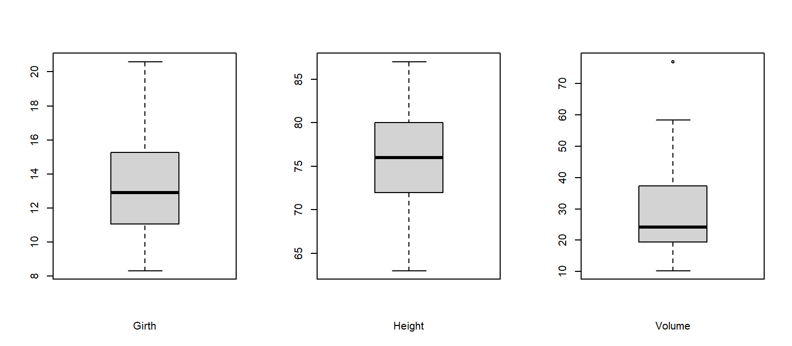
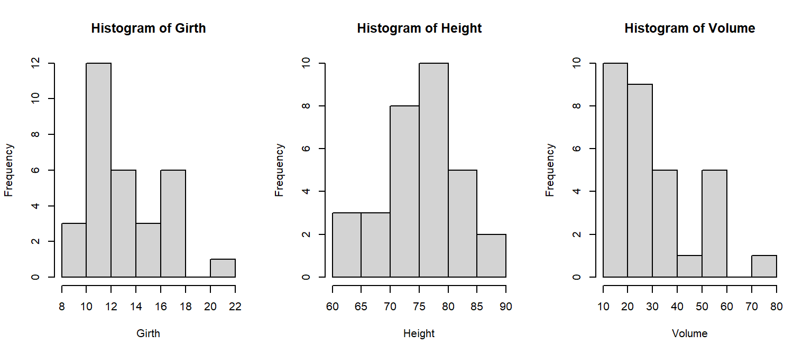
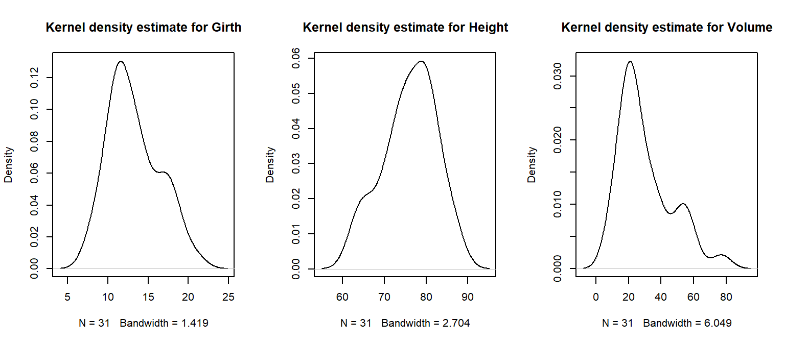
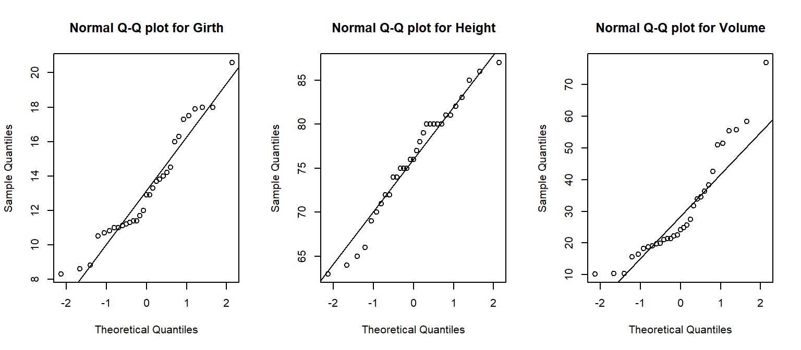
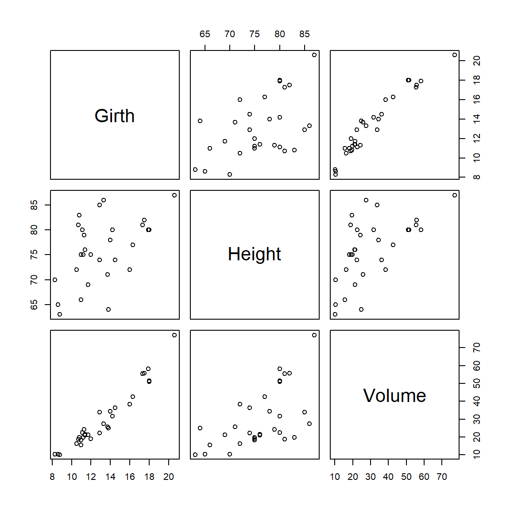
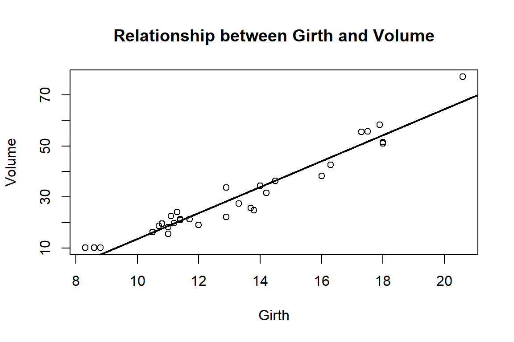

head(trees) Girth Height Volume
1 8.3 70 10.3
2 8.6 65 10.3
3 8.8 63 10.2
4 10.5 72 16.4
5 10.7 81 18.8
6 10.8 83 19.7통계적 문제 해결을 위해서는 데이터 수집과 수집된 데이터에 대한 적절한 통계분석 과정이 필요하다. 다양한 통계적 문제들을 해결하기 위해서는 각각의 경우에 적합한 통계모형과 분석방법에 대한 이해가 있어야 한다. 상황에 적합하지 않은 통계적 방법은 문제의 본질적 목적을 흐리게 할 수 있으므로, 구체적인 통계방법을 정하기 전에 문제에 대한 명확한 정의와 이해가 필요하다.
통계분석은 단순히 데이터를 프로그램에 입력하고 결과를 해석하는 과정이 아니다. 좋은 통계분석은 연구 질문을 명확히 정의하고, 그 질문에 적합한 데이터를 준비하며, 자료의 특성을 충분히 확인한 후 적절한 통계모형을 선택하는 과정이다.
일반적인 통계분석의 흐름은 다음과 같다.
의미 있는 데이터 분석을 위해서는 문제 영역에 대한 기본적인 지식과 이해가 필요하다. 통계분석가는 데이터가 발생하는 분야의 전문가와 협업하면서 변수의 의미, 자료수집 과정, 측정 단위, 관측값의 구조를 이해해야 한다.
데이터 제공자는 데이터를 통해 어떤 정보를 얻고자 하는지 명확히 정의하지 않는 경우가 있다. 여러 가지 데이터 분석을 통해 데이터에 대한 몇 가지 정보가 도출될 수 있지만, 그것이 원래 목적한 정보가 아닐 수도 있다. 따라서 통계방법을 결정하기 전에 데이터를 통해 얻고자 하는 목적을 명시하고, 그에 해당하는 적절한 분석방법을 모색해야 한다.
해결하고자 하는 문제가 통계적 용어로 적절히 표현되어야 일반적인 통계분석 문제인지, 새로운 통계적 시도가 필요한 문제인지 판단할 수 있다. 예를 들어 “두 변수의 관계가 있는가”라는 질문과 “특정 변수를 보정한 후에도 효과가 남아 있는가”라는 질문은 서로 다른 분석 전략을 요구한다.
분석 전에는 다음 정보를 확인해야 한다.
통계 방법론을 적용하기 전에 데이터의 특성을 파악하는 것은 매우 중요하다. 기술통계는 평균, 표준편차, 최댓값, 최솟값 등 변수의 분포와 특성을 요약하는 수치적 방법과, 상자그림, 히스토그램, 산점도와 같은 그래프를 포함한다.
기술통계를 통해 각 변수의 분포, 이상점, 변수들 간의 상관성 등에 대한 정보를 파악할 수 있다. 또한 가능한 범위를 벗어나는 데이터나 입력 오류를 탐색할 수 있다. 실제 분석에서는 오류 없는 데이터를 준비하는 과정이 통계모형을 적합하는 과정보다 더 많은 시간이 걸리기도 한다. 그러나 정확한 통계분석을 위해 반드시 필요한 과정이다.
trees 데이터는 R에 기본으로 포함된 자료로, 31그루의 흑체리 나무에 대해 나무 둘레(Girth), 높이(Height), 부피(Volume)가 측정되어 있다. 이 자료를 이용하여 기술통계와 그래프를 확인해보자.
head(trees) Girth Height Volume
1 8.3 70 10.3
2 8.6 65 10.3
3 8.8 63 10.2
4 10.5 72 16.4
5 10.7 81 18.8
6 10.8 83 19.7summary(trees) Girth Height Volume
Min. : 8.30 Min. :63 Min. :10.20
1st Qu.:11.05 1st Qu.:72 1st Qu.:19.40
Median :12.90 Median :76 Median :24.20
Mean :13.25 Mean :76 Mean :30.17
3rd Qu.:15.25 3rd Qu.:80 3rd Qu.:37.30
Max. :20.60 Max. :87 Max. :77.00 summary() 결과를 통해 각 변수의 최솟값, 제1사분위수, 중앙값, 평균, 제3사분위수, 최댓값을 확인할 수 있다. 이 값들은 변수의 중심 위치와 산포 정도를 간단히 요약한다. 예를 들어 평균과 중앙값이 크게 다르면 분포가 한쪽으로 치우쳐 있을 가능성이 있으며, 최솟값이나 최댓값이 다른 값들과 크게 차이가 나면 이상값의 가능성을 고려할 수 있다.
par(mfrow=c(1,3))
boxplot(trees$Girth, xlab="Girth")
boxplot(trees$Height, xlab="Height")
boxplot(trees$Volume, xlab="Volume")
상자그림은 변수의 분포와 이상값을 빠르게 확인하는 데 유용하다. 상자의 가운데 선은 중앙값을 나타내며, 상자의 아래와 위는 각각 제1사분위수와 제3사분위수를 나타낸다. 상자 밖으로 멀리 떨어진 점이 있다면 이상값일 가능성이 있으므로 자료 입력 오류인지, 실제로 의미 있는 극단값인지 확인해야 한다.
par(mfrow=c(1,3))
hist(trees$Girth, xlab="Girth", main="Histogram of Girth")
hist(trees$Height, xlab="Height", main="Histogram of Height")
hist(trees$Volume, xlab="Volume", main="Histogram of Volume")
히스토그램은 변수의 분포 형태를 확인하는 데 사용된다. 분포가 대칭적인지, 한쪽으로 치우쳐 있는지, 여러 개의 봉우리를 가지는지 등을 확인할 수 있다. 회귀분석에서는 반응변수나 설명변수의 분포를 미리 살펴봄으로써 변환이 필요한지, 이상값이 존재하는지 판단할 수 있다.
par(mfrow=c(1,3))
plot(density(trees$Girth), main="Kernel density estimate for Girth")
plot(density(trees$Height), main="Kernel density estimate for Height")
plot(density(trees$Volume), main="Kernel density estimate for Volume")
밀도그림은 히스토그램과 유사하게 변수의 분포 형태를 보여주지만, 구간 설정에 덜 민감한 부드러운 곡선으로 분포를 표현한다. 자료의 분포가 한쪽으로 치우쳐 있는지, 여러 개의 중심을 가지는지 등을 확인하는 데 도움이 된다.
par(mfrow=c(1,3))
qqnorm(trees$Girth, main="Normal Q-Q plot for Girth")
qqline(trees$Girth)
qqnorm(trees$Height, main="Normal Q-Q plot for Height")
qqline(trees$Height)
qqnorm(trees$Volume, main="Normal Q-Q plot for Volume")
qqline(trees$Volume)
Q-Q plot은 자료가 정규분포에 가까운지를 시각적으로 확인하는 방법이다. 점들이 기준 직선 주변에 대체로 위치하면 정규분포에 가까운 것으로 볼 수 있다. 반대로 양 끝부분에서 점들이 크게 벗어난다면 분포의 꼬리가 두껍거나 이상값이 존재할 가능성이 있다.
pairs(trees)
산점도 행렬은 여러 변수들 사이의 쌍별 관계를 한 번에 확인할 수 있는 그래프이다. 회귀분석에서는 반응변수와 설명변수 사이에 선형적인 관계가 있는지, 설명변수들 사이에 강한 상관성이 있는지를 사전에 확인하는 데 유용하다.
회귀(regression)라는 용어는 19세기 후반 영국의 유전학자인 Francis Galton이 생물학적 현상을 설명하는 과정에서 유래하였다. 부모의 키에 상관없이 자식들은 결국 평균키에 가까워지는 경향을 보이는 생물학적 현상에 대해 Galton이 이 용어를 사용하였고, 이후 Yule과 Pearson에 의해 통계적 개념으로 확장되었다.
1922년 Fisher는 반응변수의 조건부 확률분포가 정규분포를 따른다는 관점에서 회귀분석을 체계화하였다. 이후 선형회귀, 비선형회귀, 비모수회귀, 베이지안 회귀 등 다양한 방법들이 제안되어 여러 실무 분야에서 응용되고 있다.
상관분석과 회귀분석은 모두 두 변수 사이의 관계를 다룬다는 점에서 유사하지만 목적이 다르다. 상관분석은 두 변수가 함께 증가하거나 감소하는 정도를 하나의 수치로 요약하는 방법이다. 반면 회귀분석은 하나의 변수를 반응변수로, 다른 변수를 설명변수로 설정하여 설명변수가 변할 때 반응변수의 평균적인 값이 어떻게 변하는지를 모형으로 표현한다.
예를 들어 키와 몸무게의 관계를 분석할 때, 상관분석은 두 변수가 얼마나 강하게 관련되어 있는지를 나타낸다. 반면 회귀분석은 키가 1cm 증가할 때 평균 몸무게가 얼마나 증가하는지를 설명하거나, 특정 키를 가진 사람의 평균 몸무게를 예측하는 데 사용된다.
회귀분석은 반응변수(response variable)와 설명변수(explanatory variable) 간의 관계를 설명하는 통계적 분석방법이다.
회귀분석은 변수들 중 하나를 반응변수로, 나머지를 설명변수로 설정하여 설명변수가 변화함에 따라 반응변수의 평균적인 값이 어떻게 변하는지를 분석한다. 독립변수와 종속변수 간의 관계를 분석하거나 상호 연관성을 찾을 때 유용하다.
회귀분석은 연속형 반응변수와 설명변수 사이의 관계식을 구하고, 그 식을 이용하여 설명변수가 주어졌을 때 반응변수를 예측할 수 있는 분석방법이다. 설명변수는 반드시 연속형일 필요는 없으며, 범주형 변수도 적절한 코딩을 통해 회귀모형에 포함할 수 있다.
회귀분석의 목적은 크게 다음 세 가지로 구분할 수 있다.
회귀분석은 분석 목적에 따라 해석의 초점이 달라진다. 설명(explanation)이 목적일 때는 특정 설명변수가 반응변수와 어떤 관련성을 가지는지, 다른 변수들을 보정한 후에도 그 효과가 유지되는지를 중요하게 본다. 이 경우 회귀계수의 크기, 방향, 신뢰구간, p-value 등이 주요 관심 대상이 된다.
반면 예측(prediction)이 목적일 때는 개별 설명변수의 통계적 유의성보다 새로운 자료에서 반응변수를 얼마나 정확하게 예측하는지가 더 중요하다. 이 경우 평균제곱오차, 예측오차, 교차검증, 훈련자료와 검증자료의 구분 등이 중요한 평가 기준이 된다.
따라서 같은 회귀분석이라도 연구 목적이 설명인지 예측인지에 따라 모형 선택, 변수 선택, 결과 해석 방식이 달라질 수 있다.
회귀분석의 핵심 결과는 회귀계수이다. 회귀계수는 설명변수가 한 단위 증가할 때 반응변수의 평균적인 값이 얼마나 변하는지를 나타낸다. 단순선형회귀분석에서는 하나의 기울기로 두 변수 사이의 평균적인 선형 관계를 요약한다.
회귀모형은 자료의 모든 관측값을 완벽하게 설명하지는 못한다. 실제 관측값과 회귀모형이 예측한 값 사이에는 차이가 발생한다. 이론적으로 모형에서 설명되지 않는 부분을 오차(error)라고 하며, 실제 자료에서 관측값과 적합값의 차이를 잔차(residual)라고 한다. 잔차는 회귀모형이 자료를 얼마나 잘 설명하는지 확인하는 중요한 도구이다.
회귀분석 결과를 적절하게 해석하기 위해서는 몇 가지 기본 가정이 필요하다. 이 가정들은 회귀계수의 추정값이 타당한지, 표준오차와 p-value를 신뢰할 수 있는지, 예측 결과가 안정적인지를 판단하는 기준이 된다.
회귀분석에서 설명변수와 반응변수 사이에 통계적 관련성이 관찰되더라도 이것이 곧 인과관계를 의미하는 것은 아니다. 특히 관측자료에서는 두 변수 모두와 관련된 제3의 변수, 즉 교란변수가 존재할 수 있다. 따라서 회귀분석 결과를 인과적으로 해석하기 위해서는 연구 설계, 변수 선택, 교란변수 보정, 시간적 선후관계 등에 대한 추가적인 검토가 필요하다.
기술통계를 통해 자료의 분포를 확인한 후에는 두 변수 사이의 관계를 회귀모형으로 표현할 수 있다. 예를 들어 trees 데이터에서 나무의 둘레(Girth)가 나무의 부피(Volume)와 어떤 관계를 가지는지 살펴보자.
fit_tree <- lm(Volume ~ Girth, data = trees)
summary(fit_tree)
Call:
lm(formula = Volume ~ Girth, data = trees)
Residuals:
Min 1Q Median 3Q Max
-8.065 -3.107 0.152 3.495 9.587
Coefficients:
Estimate Std. Error t value Pr(>|t|)
(Intercept) -36.9435 3.3651 -10.98 7.62e-12 ***
Girth 5.0659 0.2474 20.48 < 2e-16 ***
---
Signif. codes: 0 '***' 0.001 '**' 0.01 '*' 0.05 '.' 0.1 ' ' 1
Residual standard error: 4.252 on 29 degrees of freedom
Multiple R-squared: 0.9353, Adjusted R-squared: 0.9331
F-statistic: 419.4 on 1 and 29 DF, p-value: < 2.2e-16plot(trees$Girth, trees$Volume,
xlab = "Girth",
ylab = "Volume",
main = "Relationship between Girth and Volume")
abline(fit_tree, lwd = 2)
산점도를 보면 나무의 둘레가 증가할수록 부피도 증가하는 경향을 보인다. 회귀직선은 이러한 평균적인 증가 경향을 하나의 직선으로 요약한다. 이 예제에서 회귀계수는 나무의 둘레가 한 단위 증가할 때 평균 부피가 얼마나 증가하는지를 나타낸다. 이러한 해석은 이후 단순선형회귀분석 장에서 더 자세히 다룬다.
이 교재에서는 회귀분석의 개념을 설명하기 위해 여러 예제 데이터를 사용한다. 각 데이터는 서로 다른 회귀분석 상황을 보여주기 위한 것이다.
load("dataset/cholesterol.rda")
head(cholesterol, 10) 환자번호 성별 나이 이완기혈압 수축기혈압 콜레스테롤
1 1 m 45 136 90 190
2 2 m 35 125 80 190
3 3 m 55 150 70 210
4 4 f 24 160 90 190
5 5 f 29 145 86 205
6 6 f 48 155 78 210
7 7 f 39 170 75 200
8 8 m 42 145 90 220
9 9 m 50 136 90 230
10 10 m 49 140 98 190load("dataset/sat.rda")
head(sat, 10) female rdsc vocab matsc
1 0 29 42 35
2 1 46 48 42
3 0 60 48 59
4 0 64 45 62
5 0 56 51 56
6 1 68 66 56
7 0 61 69 64
8 1 55 51 53
9 1 37 42 33
10 0 36 39 49load("dataset/temprature.rda")
head(temprature, 10) date temp rain humi winds cir65 res65 cir res total o3mean pm10m
1 2012-01-01 -1.5 NA 58.5 1.6 22 13 27 13 115 5.385 49.51
2 2012-01-02 2.7 0.1 77.0 1.6 24 8 34 14 108 6.171 104.60
3 2012-01-03 1.9 NA 59.0 1.2 28 9 39 12 122 7.204 94.74
4 2012-01-04 2.5 NA 54.1 1.2 26 7 42 12 127 5.672 92.27
5 2012-01-05 3.6 NA 65.5 1.2 13 7 21 10 91 4.863 126.31
6 2012-01-06 3.3 1.8 74.6 2.2 31 14 39 16 129 5.920 102.40
7 2012-01-07 -6.0 NA 40.4 5.2 19 7 26 11 103 17.091 40.45
8 2012-01-08 -9.1 NA 45.3 4.4 21 14 30 14 114 14.638 60.02
9 2012-01-09 -9.3 NA 43.3 4.2 15 9 21 11 101 14.700 61.73
10 2012-01-10 -6.7 NA 37.1 4.0 29 9 34 10 127 13.897 35.20load("dataset/gdp.rda")
head(gdp, 10) Year GDP C I G Yd NX
1 1960 2376.7 1510.8 272.8 661.3 1664.8 -20.5
2 1961 2432.0 1541.2 271.0 693.2 1720.0 -18.4
3 1962 2578.9 1617.3 305.3 735.0 1803.5 -25.8
4 1963 2690.4 1684.0 325.7 752.4 1871.5 -22.0
5 1964 2846.5 1784.8 352.6 767.1 2006.9 -15.0
6 1965 3028.5 1897.6 402.0 791.1 2131.0 -26.4
7 1966 3227.5 2006.1 437.3 862.1 2244.6 -39.9
8 1967 3308.3 2066.2 417.2 927.1 2340.5 -49.2
9 1968 3466.1 2184.2 441.3 956.6 2448.2 -66.1
10 1969 3571.4 2264.8 466.9 952.5 2524.3 -70.2통계분석을 시작하기 전에 분석 목적을 명확히 해야 하는 이유를 설명하시오.
관측자료와 실험자료의 차이를 설명하시오. 각각의 예를 하나씩 제시하시오.
기술통계량 중 평균과 중앙값이 서로 크게 다를 때 어떤 점을 의심할 수 있는지 설명하시오.
상자그림과 히스토그램은 각각 어떤 정보를 제공하는지 설명하시오.
상관분석과 회귀분석의 차이를 설명하시오.
회귀분석에서 반응변수와 설명변수의 의미를 설명하고, 예를 하나 제시하시오.
회귀분석의 목적을 설명, 예측, 관계의 기술로 구분하여 설명하시오.
trees 데이터를 이용하여 Girth와 Volume의 산점도를 그리고, 두 변수 사이의 관계를 간단히 설명하시오.
trees 데이터를 이용하여 Volume ~ Girth 회귀모형을 적합하고 회귀계수를 해석하시오.
회귀분석 결과를 인과관계로 해석할 때 주의해야 하는 이유를 설명하시오.